PAST SYMPOSIUMS
2nd Symposium


The 2nd Symposium has concluded. Thank you to everyone who participated.
Dates
March 16 (Mon) – 17 (Tue), 2026
Venue
Tetsumon Memorial Hall, Faculty of Medicine, The University of Tokyo
7-3-1 Hongo, Bunkyo-ku, Tokyo, Japan
1st Symposium


The 1st Symposium brought together experts from diverse fields for lively discussions on the integration of data science and life sciences.
Dates
October 21 (Mon) – 22 (Tue), 2024
Venue
Sanjo Conference Hall, The University of Tokyo
7-3-1 Hongo, Bunkyo-ku, Tokyo, Japan